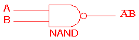
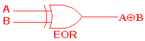

What are logic gates?
Logic gates are what make up all of our electronics today. They take an input (or several), and produce a single output (0 or 1, ON or OFF) based on a set of rules. Logic gates are only electronic versions of
The NOT gate
One of the most basic types of a logic gate is the NOT logic gate. The diagram for a NOT logic gate looks like this:
Meaning whatever "A" is, the output will be "Ā", which means the output is the opposite of A. In programming languages like JavaScript and C++, the NOT operator is
The NOT gate's
| A | Ā |
| 1 | 0 |
| 0 | 1 |
Input:
Output:
The AND gate

The AND gate is similar to the NOT gate, but it takes 2 inputs, and only gives an output of 1 if both of the inputs are 1.
This is the AND gate's
| A | B | AB |
| 0 | 0 | 0 |
| 0 | 1 | 0 |
| 1 | 0 | 0 |
| 1 | 1 | 1 |
Inputs:
Output:
The OR gate

The OR gate is similar to the AND gate. It takes two inputs, and only outputs 1 if the sum of the inputs are greater than or equal to 1. In programming, the OR operation is usually portrayed with double bars:
This is the OR gate's
| A | B | A+B |
| 0 | 0 | 0 |
| 0 | 1 | 1 |
| 1 | 0 | 1 |
| 1 | 1 | 1 |
Inputs:
Output:
The NAND gate

The NAND gate, also known as the NOT-AND gate, is exactly what the name implies; it's an AND gate followed by an NOT gate. This means that whenever any input is 0, the output will be 1. The symbol for NAND is also representative of a NOT and an AND gate, with the large rounded end shape representing AND, and the small circle after it representing NOT.
This is the NAND gate's
| A | B | A̅B̅ |
| 0 | 0 | 1 |
| 0 | 1 | 1 |
| 1 | 0 | 1 |
| 1 | 1 | 0 |
Inputs:
Output:
The NOR gate

The NOR gate, similar to the NAND gate, also explains itself in its name. It's an OR gate followed by an NOT gate. In a NOR gate, the output is 0 if any of the inputs are 1. It's the opposite of an OR gate.
This is the NOR gate's
| A | B | A̅+B̅ |
| 0 | 0 | 1 |
| 0 | 1 | 0 |
| 1 | 0 | 0 |
| 1 | 1 | 0 |
Inputs:
Output:
The XOR (EOR) gate

Last but not least there's the XOR gate, also known as the EOR gate. XOR stands for "Exclusive OR", which means it will output 1 if at most ONE of the two inputs are 1.
This is the XOR gate's
| A | B | A⊕B |
| 0 | 0 | 0 |
| 0 | 1 | 1 |
| 1 | 0 | 1 |
| 1 | 1 | 0 |
Inputs:
Output:
The XOR operation can also be preformed on strings as an encryption method. This demo below
lets you input a secret string, a secret password (key), and will encrypt that string with the password and
print it in the last textbox.
More complex circuits
All of the logic gates can be combined to create a circuit, or a system.This is what the basis of all computers are. In fact, the average CPU nowadays has more than 1.4 billion transistors, and on average 1 logic gate requires 3 transistors, so the average CPU has about 450 million logic gates!
Below is a circuit building simulator that you can use to combine logic gates and create your own circuit. Have fun!
Pstt... here's a little cheat sheet too if you forgot what the symbols were for each logic gate ;)

The end
Thank you for reading! I hope you learned a little bit more about logic gates and how they work!Sources:
https://wikipedia.org/wiki/Boolean_algebra
https://wikipedia.org/wiki/Logic_gate
http://www.ee.surrey.ac.uk/Projects/CAL/digital-logic/gatesfunc/index.html
https://codepen.io/Designer023/pen/PKzgEX
XOR encryption demo - Gottfried Haider
https://github.com/Metapyziks/Logic-Sim